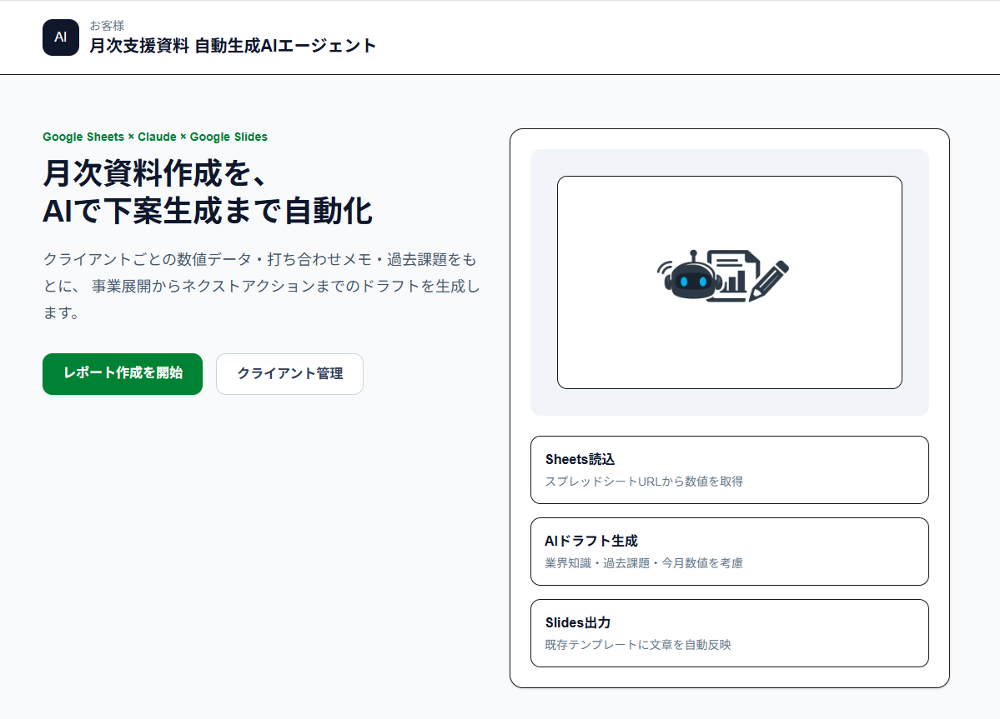
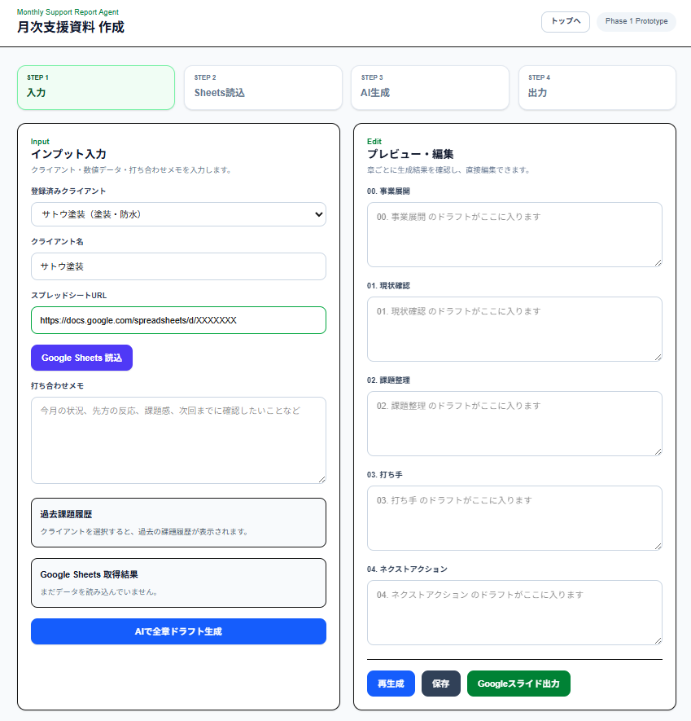

1. 背景
月次のクライアント支援資料は、スプレッドシート上の数値確認、前回資料の参照、 打合せメモの整理、課題抽出、施策案の作成など、多くの手作業が発生します。 そこで、数値データ・メモ・過去資料をもとにAIが資料ドラフトを生成し、 Googleスライドへ反映する仕組みを作成しました。
2. 課題
- 毎月の資料作成に時間がかかる
- スプレッドシートから必要な数値を読み取る作業が手作業になっている
- 担当者によって課題整理・打ち手提案の品質にばらつきが出やすい
- 前回資料や打合せメモの内容を踏まえた資料作成が属人化しやすい
- Googleスライドへの転記・反映作業に手間がかかる
3. 解決方法
Web画面で顧客を選択すると、事前登録されたスプレッドシートURLをもとに Google Sheets APIで数値データを取得します。 さらに、打合せメモや前回資料PDFの内容をAIへ渡し、 月次支援資料の各章ドラフトを自動生成。 生成結果を確認・編集したうえで、Google Slides APIによりテンプレートへ反映する構成にしました。
顧客選択 → スプレッドシート読込 → 打合せメモ/PDF読込 → AIドラフト生成 → 画面で確認・編集 → Googleスライド反映
4. システム構成図
処理の流れは以下の通りです。
① Next.js Web画面
↓ 顧客選択・打合せメモ入力・PDF添付
② Python / FastAPI
↓ Google API連携・AI生成処理・DB保存
③ Google Sheets API
↓ スプレッドシートから月次数値を取得
④ AI API
↓ 事業展開・現状確認・課題整理・打ち手・ネクストアクションを生成
⑤ PostgreSQL
↓ 顧客情報・生成履歴・入力内容を保存
⑥ Google Slides API
テンプレートスライドへ文章・数値を反映
↓ 顧客選択・打合せメモ入力・PDF添付
② Python / FastAPI
↓ Google API連携・AI生成処理・DB保存
③ Google Sheets API
↓ スプレッドシートから月次数値を取得
④ AI API
↓ 事業展開・現状確認・課題整理・打ち手・ネクストアクションを生成
⑤ PostgreSQL
↓ 顧客情報・生成履歴・入力内容を保存
⑥ Google Slides API
テンプレートスライドへ文章・数値を反映
| フロントエンド | Next.js / React |
|---|---|
| バックエンド | Python / FastAPI |
| データベース | PostgreSQL |
| データ取得 | Google Sheets API |
| 資料出力 | Google Slides API / Google Drive API |
| AI処理 | OpenAI API / Claude / Gemini など |
5. 画面・スクリーンショット
TOP画面
月次支援資料の作成を、顧客選択からAIドラフト生成まで一画面で開始
顧客ごとに登録されたスプレッドシートURLをもとに数値データを取得し、 AIが月次支援資料のドラフトを生成。最終的にGoogleスライドへ反映する流れを想定しています。

資料作成画面
数値データ・メモを入力し、AIが各章のドラフトを自動生成
スプレッドシートから取得した数値データと打合せメモをもとに、 「事業展開・現状確認・課題整理・打ち手・ネクストアクション」などの 月次支援資料の各章をAIが自動生成します。 生成結果は画面上で直接編集でき、そのままGoogleスライドへ出力可能です。

Googleスライド出力（想定）
AIで生成したドラフトをテンプレートへ自動反映
本システムでは、AIが生成した各章のドラフトを Googleスライドのテンプレートに自動で反映する構成を想定しています。
・既存のスライドテンプレートを複製
・各スライドのプレースホルダに文章を自動挿入
・数値データ（売上・件数など）も対応箇所へ反映
・そのまま編集・共有可能な状態で出力
・各スライドのプレースホルダに文章を自動挿入
・数値データ（売上・件数など）も対応箇所へ反映
・そのまま編集・共有可能な状態で出力
6. 技術スタック
Next.js React TypeScript Python FastAPI PostgreSQL Supabase Google Sheets API Google Slides API Google Drive API OAuth認証 AI API PDF解析7. 工夫した点
- 顧客を選択すると、登録済みのスプレッドシートURLが自動セットされる構成にした
- スプレッドシートの列構成が変わっても対応しやすいように、列マッピングを意識した設計にした
- AI生成結果をそのまま出力せず、画面上で確認・編集できる流れにした
- 生成履歴をDBに保存し、過去の入力・出力を追跡できるようにした
- OAuth認証を用いて、Google Sheets / Slides / Drive APIと安全に連携した
- スライドテンプレートに対して、文章・数値をAPI経由で反映できる構成にした
8. 成果・効果
- 月次支援資料のドラフト作成を自動化
- 数値確認・課題整理・施策案作成の初稿作成を効率化
- 資料作成品質の標準化に貢献
- GoogleスプレッドシートからGoogleスライドまでの転記作業を削減
- Next.js・FastAPI・PostgreSQL・Google API・AI APIを組み合わせた実務向けWebアプリを構築